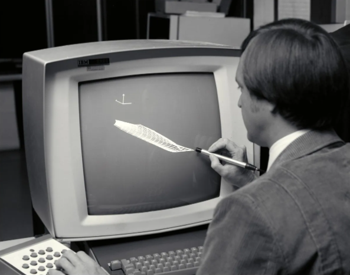
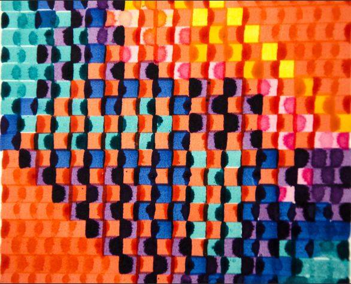

История цифрового искусства
Начало цифрового искусства
 Начало компьютерного искусства восходит к 1956-58 годам, когда было создано первое изображение человека на экране компьютера, девушка пинап на установке ПВО SAGE. В 1960 году Десмонд Пол Генри изобрел рисовальную машину, и в 1962 году, после того как его машинное искусство принесло ему известность, в галерее Рида в Лондоне была организована выставка его работ. К середине 1960-х годов большинство людей, участвовавших в создании компьютерного искусства, были фактически инженерами и учеными, поскольку только они имели доступ к вычислительным ресурсам, доступным в университетских научно-исследовательских лабораториях. Многие художники в предварительном порядке начали изучать новые вычислительные технологии для использования в качестве творческого инструмента. Летом 1962 года А. Майкл Нолл запрограммировал цифровой компьютер в Лабораториях Белла в Мюррей-Хилле, чтобы генерировать визуальные паттерны исключительно для художественных целей. Его более поздние компьютерные модели имитировали картины Пита Мондриана и Бриджит Райли и стали классикой. Нолл также использовал эти паттерны для изучения эстетических предпочтений в середине 1960-х годов.
Первые выставки
 Две первые выставки компьютерного искусства были проведены в 1965 году: Generative Computergrafik, в феврале, в Высшей технической школе Штутгарта, и Computer-Generated Pictures, в апреле, в галерее Говарда Уайза в Нью-Йорке. На Штутгартской выставке были представлены работы Георга Ниса; на Нью-йоркской выставке были представлены работы Белы Юлеш и А. Майкла Нолла, которые были названы искусством газетой "Нью-Йорк Таймс". Третья выставка была открыта в ноябре 1965 года в галерее Венделин Нидлих в Штутгарте, где были представлены работы Фридера Наке и Георга Ниса. Аналоговое компьютерное искусство Моэна Мейсона вместе с цифровым компьютерным искусством Нолла были выставлены на совместной компьютерной конференции AFIPS Fall в Лас-Вегасе в конце 1965 года.В 1968 году в Институте Современного Искусства в Лондоне была организована одна из самых влиятельных ранних выставок компьютерного искусства под названием "кибернетическая интуиция". На выставке были представлены многие из тех, кого часто считали первыми цифровыми художниками: Нам Джун Пайк, Фридер Наке, Лесли Мезей, Георг Нис, А. Майкл Нолл, Джон Уитни и Чарльз Чури. Год спустя в Лондоне было основано Общество компьютерных искусств.
Дальнейшее развитие
 Во время открытия "кибернетической интуиции" в августе 1968 года в Загребе был проведен симпозиум под названием "компьютеры и визуальные
исследования". Он собрал европейских художников новых тенденций, таких как конкретное, кинетическое и конструктивное искусства, а также
оп-арт и концептуальное искусство.В 1970 году Кэтрин Нэш и Ричард Уильямс опубликовали компьютерную программу для художников ART 1.
Исследовательский центр корпорации Xerox в Пало-Альто (PARC) разработал первый графический интерфейс пользователя в 1970-х гг. Первый
компьютер Macintosh был выпущен в 1984 г., и с тех пор графический интерфейс стал популярным. Многие графические дизайнеры быстро восприняли
его потенциал как творческий инструмент.В июле 1985 года Энди Уорхол публично представил в Линкольн-центре образец цифрового искусства,
созданный с помощью компьютера Commodore Amiga. Изображение Дебби Харри было снято монохромно с видеокамеры и оцифровано в графическую
программу ProPaint. Уорхол манипулировал изображением, добавляя цвет с помощью потоковой заливки.
Во время открытия "кибернетической интуиции" в августе 1968 года в Загребе был проведен симпозиум под названием "компьютеры и визуальные
исследования". Он собрал европейских художников новых тенденций, таких как конкретное, кинетическое и конструктивное искусства, а также
оп-арт и концептуальное искусство.В 1970 году Кэтрин Нэш и Ричард Уильямс опубликовали компьютерную программу для художников ART 1.
Исследовательский центр корпорации Xerox в Пало-Альто (PARC) разработал первый графический интерфейс пользователя в 1970-х гг. Первый
компьютер Macintosh был выпущен в 1984 г., и с тех пор графический интерфейс стал популярным. Многие графические дизайнеры быстро восприняли
его потенциал как творческий инструмент.В июле 1985 года Энди Уорхол публично представил в Линкольн-центре образец цифрового искусства,
созданный с помощью компьютера Commodore Amiga. Изображение Дебби Харри было снято монохромно с видеокамеры и оцифровано в графическую
программу ProPaint. Уорхол манипулировал изображением, добавляя цвет с помощью потоковой заливки.